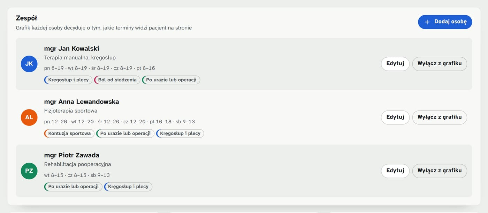
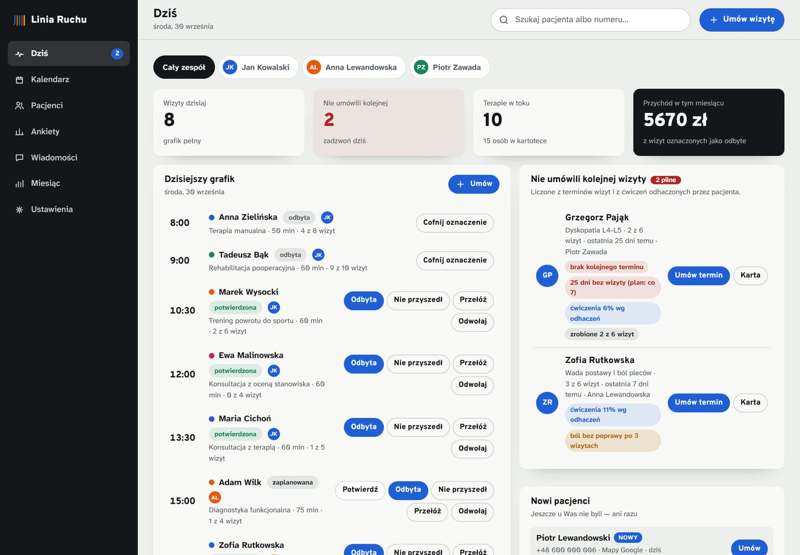
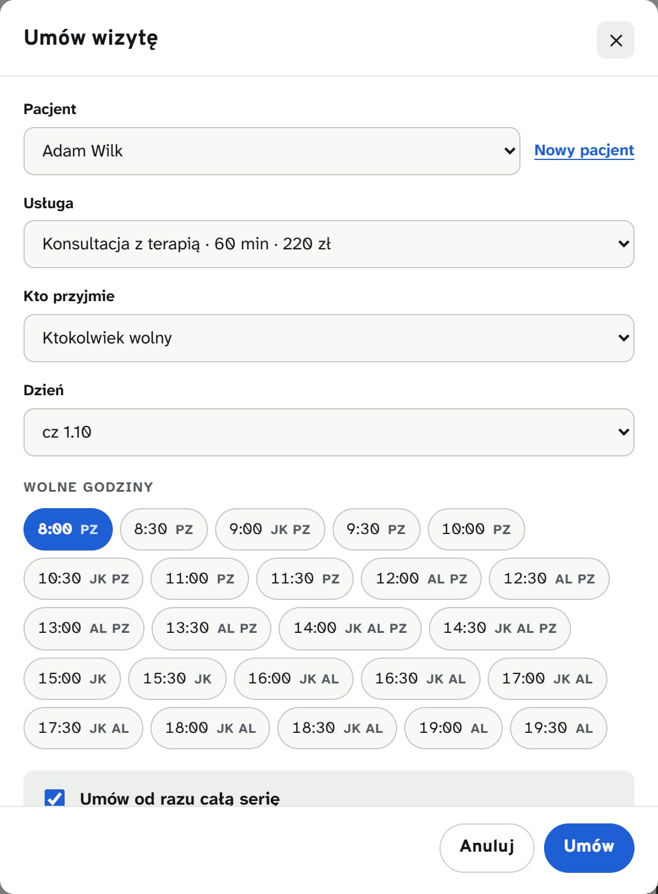
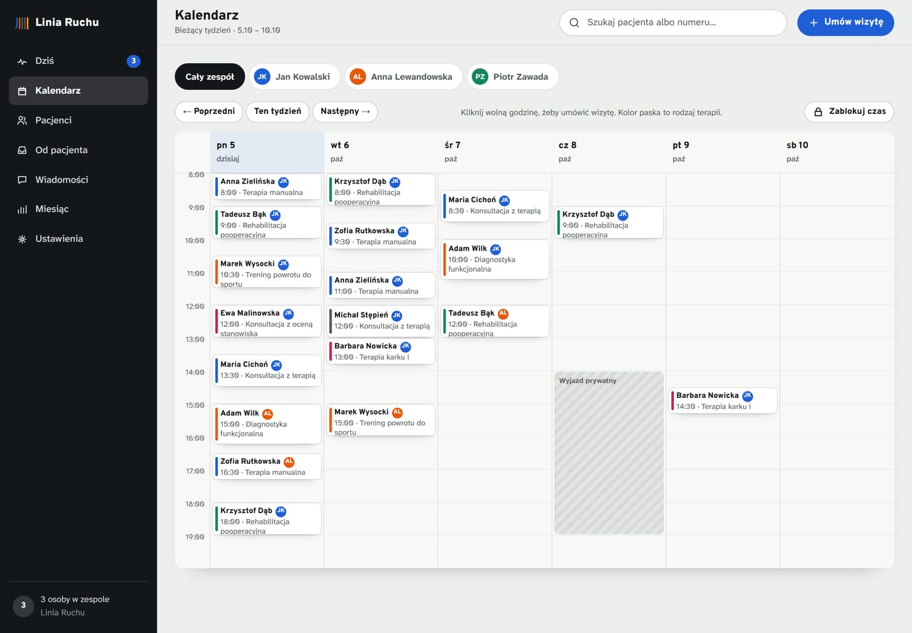
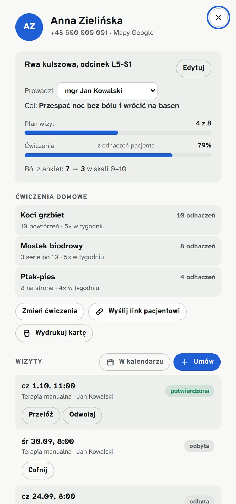
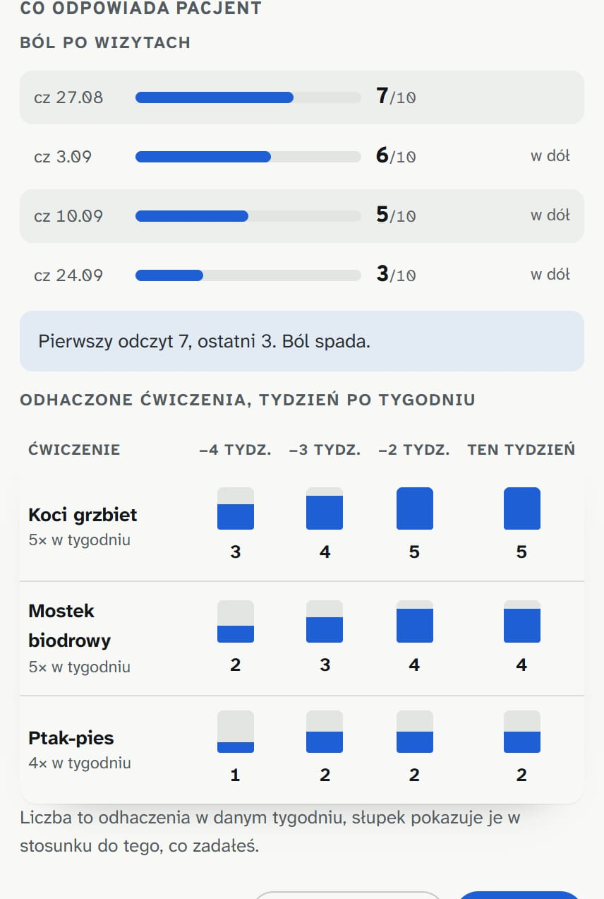
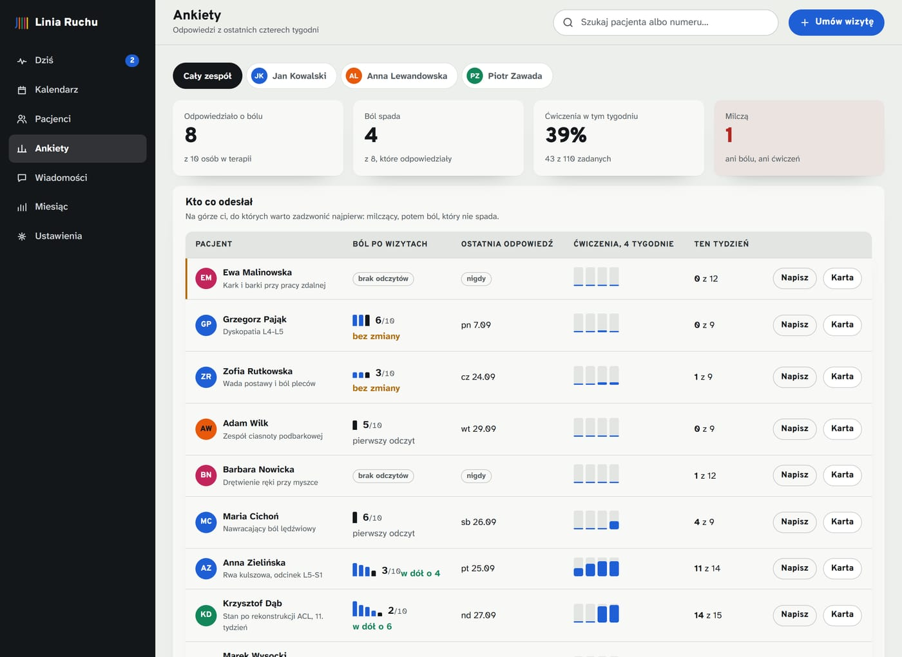
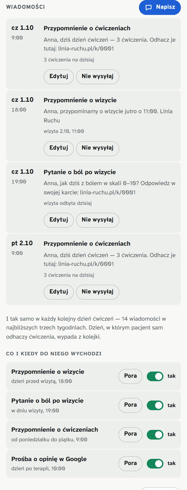
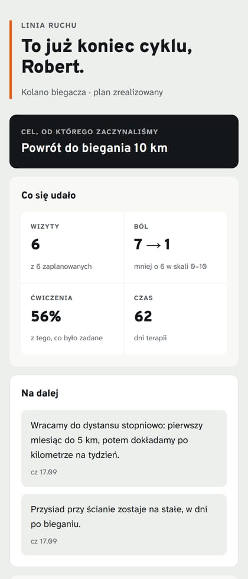
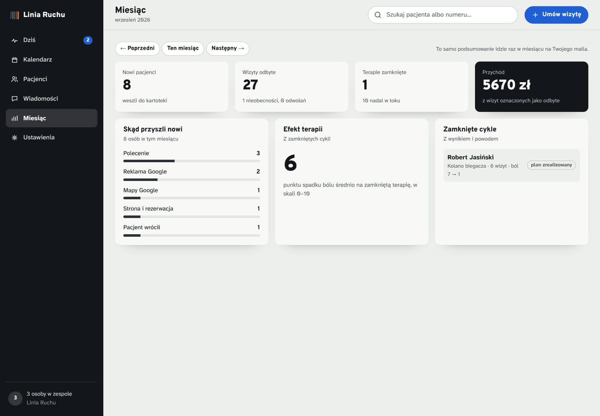

Pakiet Prowadzenie
Jak korzystać
z panelu gabinetu.
Panel ma tyle funkcji, ile potrzeba, i ani jednej więcej. Poniżej każda z nich, po kolei, z tym co robisz i po co. Dziesięć rozdziałów, kwadrans czytania — a i tak przy wdrożeniu przechodzimy to razem, na Twoich pacjentach.
Najlepiej czytać z otwartym demem obok — wszystko, co tu opisujemy, da się w nim kliknąć.
Rozdział 01
Pierwsze wejście
Panel otwiera się w przeglądarce, tak samo jak poczta — nie trzeba niczego instalować ani nosić ze sobą. Za pierwszym razem zadajemy trzy pytania: jak nazywa się gabinet, kto przyjmuje i w jakich godzinach. Od tego momentu wszystko liczy się z tych godzin.
- Wpisujesz nazwę gabinetu, adres i telefon — to samo, co zobaczy pacjent w SMS-ie.
- Dodajesz osoby, które przyjmują, i zaznaczasz ich dni oraz godziny.
- Zaznaczasz, kto jakimi problemami się zajmuje — po tym strona dobiera wolne terminy.
Nie musisz trafić za pierwszym razem. Wszystko z tego kreatora zmienisz później w zakładce Ustawienia, a przy wdrożeniu i tak przechodzimy to razem.

PowiększRozdział 02
Rano: zakładka „Dziś”
Jeden ekran, od którego zaczynasz dzień. Po lewej dzisiejsze wizyty, po prawej ludzie wymagający telefonu. U góry cztery liczby. To wszystko, co jest potrzebne przed pierwszym pacjentem.
- Przechodzisz listę dzisiejszych wizyt i klikasz Potwierdź przy tych, z którymi rozmawiałeś.
- Po wizycie klikasz Odbyta — dopiero wtedy wchodzi do przychodu i do postępu terapii.
- Kto nie przyszedł, dostaje Nie przyszedł; to też jest informacja, nie kara.
- Po prawej bierzesz nazwiska z listy „nie umówili kolejnej wizyty” i dzwonisz. Przycisk Umów termin jest obok.
- Niżej, w Nowych pacjentach, są ci, którzy jeszcze u Was nie byli — razem z tymi, którzy w nocy zarezerwowali sami przez stronę.
Pomyłka nic nie kosztuje. Po każdej zmianie na dole pojawia się pasek z przyciskiem Cofnij, a status wizyty zawsze da się zmienić z jej karty.

PowiększRozdział 03
Umawianie wizyty
Wizytę umówisz z trzech miejsc: przyciskiem Umów wizytę u góry, klikając wolną godzinę w kalendarzu albo z karty pacjenta. Wszędzie otwiera się to samo okno.
- Wybierasz pacjenta z listy. Jeśli go tam nie ma, klikasz Nowy pacjent w tym samym oknie — nie musisz nigdzie wychodzić.
- Gdyby ta osoba już u Was była, panel powie to od razu pod polami i jednym kliknięciem przeskoczy na jej kartę.
- Wybierasz usługę; czas trwania i cena podstawiają się same z cennika.
- Wskazujesz osobę z zespołu albo zostawiasz „ktokolwiek wolny”.
- Klikasz godzinę z podpowiedzianych. Pokazują się tylko te naprawdę wolne.
Cała seria naraz: zaznacz umów od razu całą serię, podaj liczbę wizyt i odstęp w dniach. Panel rozłoży terminy i sam ominie dni wolne oraz zajęte godziny. Sześć wizyt co tydzień to wtedy jedno okno, nie sześć. Tego samego numeru nie zapisze dwa razy — nawet gdy raz wpiszecie go ze spacjami, a raz bez.

PowiększRozdział 04
Kalendarz i blokowanie czasu
Zakładka Kalendarz pokazuje tydzień całego zespołu. Kolor paska to rodzaj problemu, inicjały to osoba. Puste miejsca są klikalne — klikasz i od razu umawiasz.
- Strzałkami u góry przechodzisz między tygodniami.
- Klikasz wizytę, żeby otworzyć jej kartę: przełożyć, odwołać albo zmienić status.
- Klikasz wolną godzinę, żeby umówić kogoś w to miejsce.
- Przyciskiem Zablokuj czas wycinasz urlop, szkolenie albo wyjazd — na jedną osobę lub na cały gabinet.
Zablokowany czas znika ze strony natychmiast. Pacjent nie zobaczy tej godziny jako wolnej, więc nie trzeba niczego odwoływać ani nikomu tłumaczyć.

PowiększRozdział 05
Karta pacjenta
Klikasz nazwisko w dowolnym miejscu panelu i z prawej strony wysuwa się karta. Jest w niej wszystko o tej osobie — i wszystko, co możesz z nią zrobić, bez wracania do innych zakładek.
- U góry: cel terapii jej słowami, postęp wizyt i procent zrobionych ćwiczeń.
- Niżej: ćwiczenia domowe, które możesz dodać, zmienić albo zdjąć.
- Wizyty — umówisz kolejną, przełożysz, odwołasz albo oznaczysz status, nie zamykając karty.
- Wiadomości — konkretne SMS-y, które do tej osoby wyjdą, i rodzaje, które możesz wyłączyć.
- Notatki — dwa zdania do zapamiętania; decydujesz, czy zostają u Ciebie, czy widzi je pacjent.
- Przyciskiem u góry wysyłasz pacjentowi link do jego własnej karty.
To nie jest dokumentacja medyczna. Karta ma pomóc prowadzić terapię i pilnować, żeby pacjent nie zniknął w połowie. Wywiad, badanie i dokumentację prowadzisz tam, gdzie prowadzisz je dzisiaj.

PowiększRozdział 06
Co odpowiedział pacjent
W karcie, pod planem terapii, jest blok Co odpowiada pacjent. Zbiera to, co ta osoba klikała w telefonie między wizytami: ból po każdej wizycie i odhaczone ćwiczenia tydzień po tygodniu.
- Lista odczytów bólu pokazuje kolejne oceny i to, w którą stronę idzie.
- Tabela tygodni pokazuje, ile z zadanych ćwiczeń odhaczył w każdym z ostatnich czterech tygodni.
- Jeśli niczego nie odesłał, jest to napisane wprost — nie zastępujemy tego wyliczoną liczbą.
Zajrzyj tu przed wizytą. Jedno spojrzenie i wiesz, czy rozmawiacie o postępie, czy o tym, dlaczego ćwiczenia stanęły w trzecim tygodniu.

PowiększRozdział 07
Zakładka Ankiety: wszyscy naraz
Karta odpowiada na pytanie o jedną osobę. Zakładka Ankiety odpowiada na pytanie o cały gabinet: kto pracuje między wizytami, u kogo ból nie schodzi i kto przestał odpowiadać. Wszystko w jednej tabeli, pacjent po pacjencie.
- Cztery liczby u góry: ilu odpowiedziało o bólu, u ilu spada, ile ćwiczeń zrobiono w tym tygodniu i ilu milczy.
- Kolejność w tabeli jest ułożona pod telefony: najpierw milczący, potem ból bez poprawy, potem zaniedbane ćwiczenia.
- Słupki przy bólu to kolejne odczyty, a te przy ćwiczeniach — cztery ostatnie tygodnie.
- Przyciskiem Napisz wysyłasz SMS-a od razu z tabeli; Karta otwiera pełną kartę.
- Przy zespole zawęzisz tabelę do jednej osoby paskiem u góry.
Pomarańczowa kreska z lewej to cisza. Pacjent, który nie odesłał ani jednej odpowiedzi, zwykle nie ćwiczy — i to on najczęściej przerywa terapię w połowie.

PowiększRozdział 08
Wiadomości do pacjentów
Wiadomości układają się same z kalendarza: przypomnienie dzień przed wizytą, pytanie o ból wieczorem po wizycie, przypomnienie o ćwiczeniach w każdy dzień ćwiczeń, prośba o opinię po zamkniętej terapii. Ty decydujesz tylko, co wychodzi, kiedy i w jakich słowach.
- W karcie pacjenta, w bloku Wiadomości, widzisz konkretne SMS-y: datę, godzinę i treść.
- Edytuj zmienia jedną wiadomość — resztę zostawia w spokoju.
- Nie wysyłaj wyjmuje pojedynczy SMS z kolejki, bez wyłączania całego rodzaju.
- Przy każdej wiadomości ustawisz też inny termin albo wyślesz ją od razu.
- Niżej, w Co i kiedy do niego wychodzi, wyłączasz całe rodzaje i ustawiasz porę — dla tej jednej osoby.
- Przy przypomnieniu o ćwiczeniach zaznaczasz dni tygodnia, w które ta osoba ma ćwiczyć; SMS idzie tylko w te dni.
- To samo dla całego gabinetu zmienisz w zakładce Wiadomości; przyciskiem Napisz wyślesz też SMS poza wszystkimi regułami.
- W kolejce siedmiu dni przyciski u góry zawężają listę do jednego rodzaju — przydaje się, bo przypomnień o ćwiczeniach jest najwięcej.
Przypomnienie milknie samo. W dniu, w którym pacjent odhaczy wszystkie ćwiczenia, SMS do niego nie pójdzie. A kto nie zgodził się na wiadomości, nie dostanie nic — niezależnie od ustawień; panel napisze to wprost w jego karcie.

PowiększRozdział 09
Zamknięcie terapii i wypis
Kiedy cykl się kończy, zamykasz go w karcie pacjenta. Panel zamraża wynik: ile wizyt się odbyło, o ile spadł ból, ile ćwiczeń zostało zrobionych i ile dni to trwało. Pacjent dostaje z tego wypis.
- W karcie klikasz Zamknij terapię i wybierasz powód: plan zrealizowany, poprawa przed planem albo przerwana.
- Liczby wyliczają się z przebiegu terapii — nie trzeba niczego wpisywać ręcznie.
- Okno mówi wprost, ile umówionych wizyt zniknie z kalendarza; przypomnienia o nich znikają razem z nimi.
- Notatki oznaczone jako widoczne trafiają na wypis jako zalecenia „na dalej”.
- Po zamknięciu panel proponuje prośbę o opinię w Google, z gotową treścią.
- Gdy ta sama osoba wróci — za miesiąc albo za trzy lata — klikasz w jej karcie Zacznij nowy cykl.
Wracający pacjent nie zakłada się od nowa. Nowy cykl dziedziczy problem, plan wizyt i — jeśli chcesz — ćwiczenia z poprzedniego razu. Numer, notatki i cała historia zostają w tej samej karcie, więc widać, z czym ta osoba była u Was wcześniej.

PowiększRozdział 10
Podsumowanie miesiąca
Zakładka Miesiąc odpowiada na jedno pytanie: czy to się kręci. Ilu nowych pacjentów, skąd przyszli, ile wizyt się odbyło, ile terapii dokończonych i o ile spadł ból u tych, którzy dotrwali do końca.
- Sprawdzasz źródła pacjentów — to mówi, czy pracuje strona, mapy, polecenia czy reklama.
- Patrzysz na liczbę dokończonych terapii; ona decyduje o przychodzie bardziej niż liczba nowych.
- To samo podsumowanie dostajesz raz w miesiącu mailem, więc nie musisz tu zaglądać.
Spadek bólu to materiał na stronę. Liczba policzona z zamkniętych terapii jest uczciwa i da się ją pokazać pacjentom — w przeciwieństwie do ankiety zadowolenia.

PowiększRozdział 11
Rzeczy, które warto wiedzieć
Kilka drobiazgów, które oszczędzają najwięcej czasu, a nie mieszczą się w żadnym z poprzednich rozdziałów.
- Cofnij pojawia się po każdej zmianie statusu, przełożeniu i odwołaniu wizyty.
- Nazwisko pacjenta jest klikalne wszędzie — w kalendarzu, w kolejce wiadomości, w podsumowaniu.
- Cennik, usługi i czasy trwania zmienisz w Ustawieniach; strona przejmuje je od razu.
- Całą bazę wyeksportujesz jednym przyciskiem. Dane pacjentów są Twoje, także gdy się rozstaniemy.
- Panel działa na tablecie w gabinecie tak samo jak na komputerze w rejestracji.
Nie zostajesz z tym sam. W pakiecie Prowadzenie odbieramy telefon i poprawiamy, co trzeba — łącznie z wpisaniem Twoich godzin, cennika i pierwszych pacjentów przy starcie.
Sprawdź to na żywo
Demo panelu jest otwarte i pełne przykładowych pacjentów. Oznacz wizytę jako odbytą, umów serię, wyłącz jeden rodzaj SMS-ów, zamknij terapię i zobacz wypis. Niczego nie zepsujesz — dane zostają w Twojej przeglądarce i nigdzie nie wychodzą.